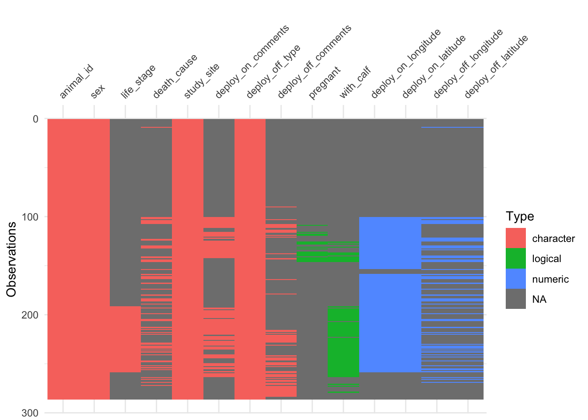
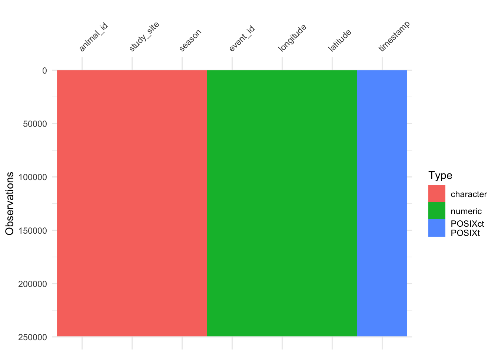
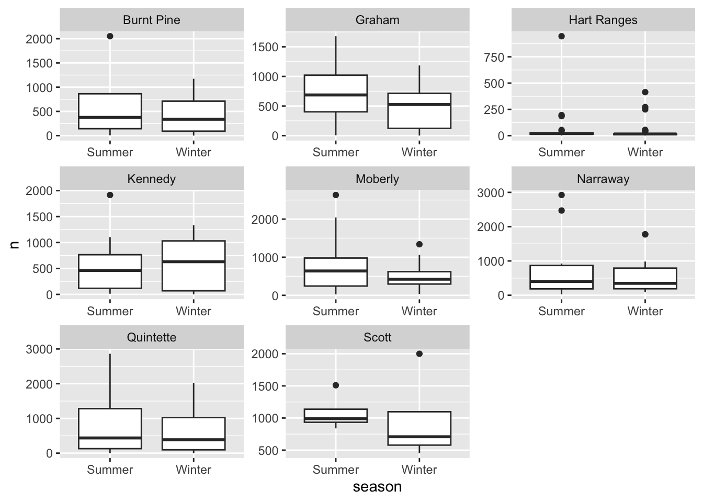
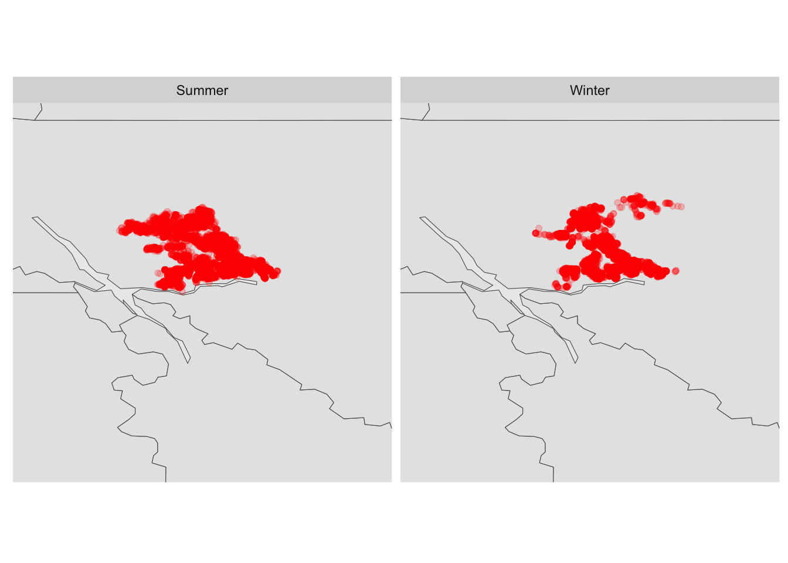
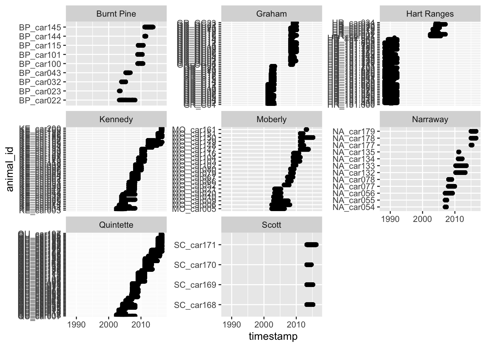
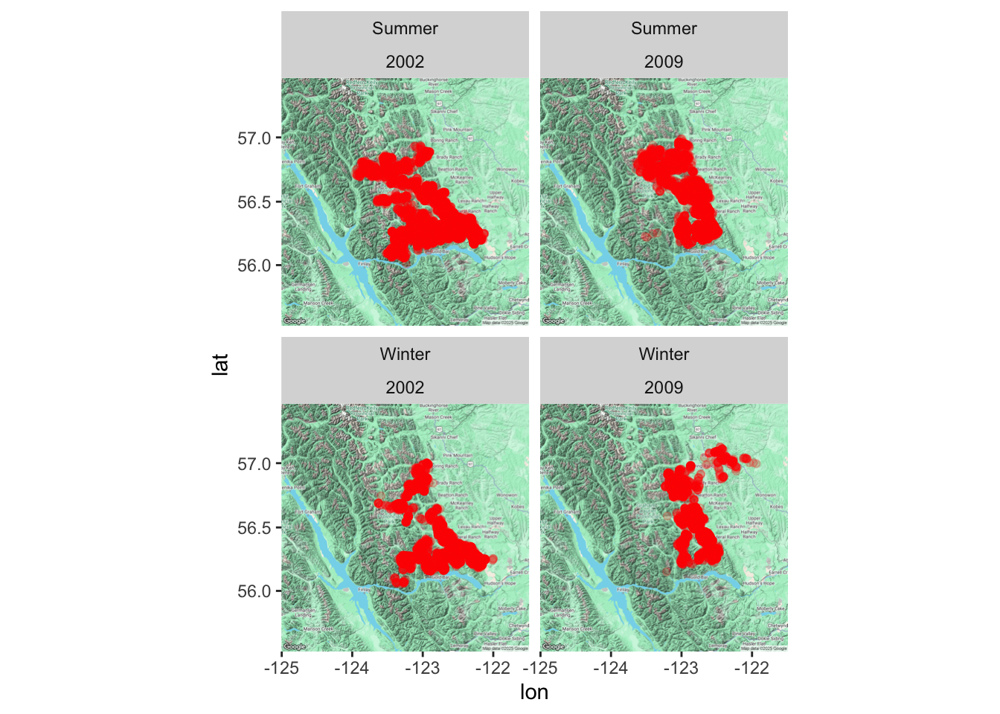
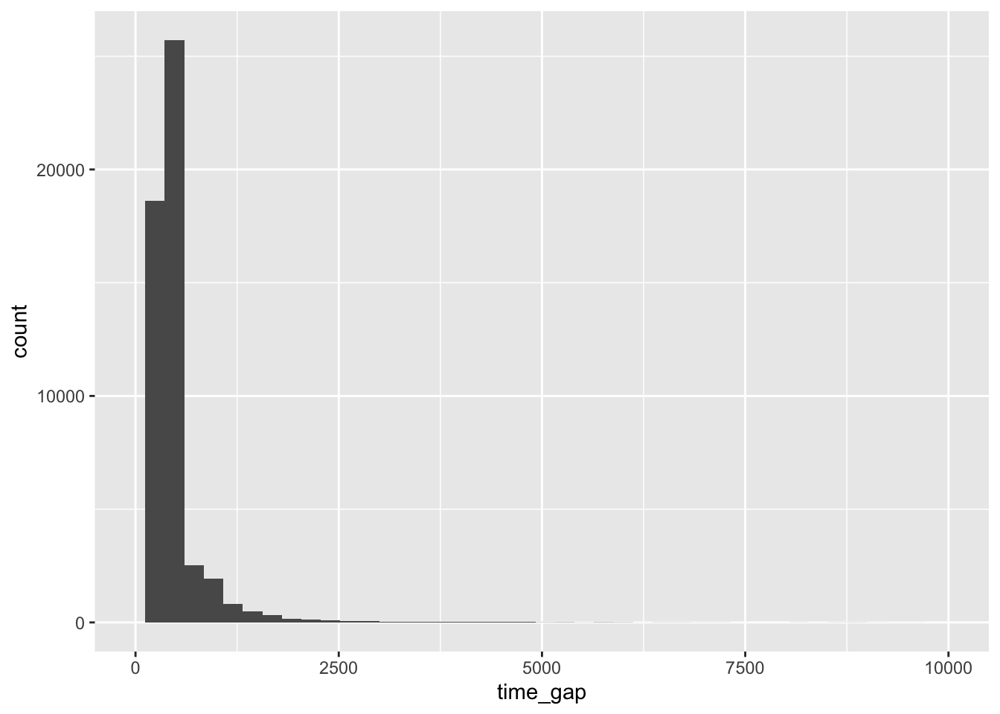

# library
library(tidyverse)
library(sf)
library(sfnetworks)
library(ggraph)
library(ggplot2)
library(ggmap)
library(tsibble)
library(cassowaryr)2 Caribou Analysis
# loading the data
load(here::here("data/caribou/caribou.Rdata"))
# data overview
glimpse(individuals)Rows: 286
Columns: 14
$ animal_id <chr> "HR_151.510", "GR_C04", "GR_C03", "HR_151.805", "…
$ sex <chr> "f", "f", "f", "f", "f", "f", "f", "f", "f", "f",…
$ life_stage <chr> NA, NA, NA, NA, NA, NA, NA, NA, NA, NA, NA, NA, N…
$ pregnant <lgl> NA, NA, NA, NA, NA, NA, NA, NA, NA, NA, NA, NA, N…
$ with_calf <lgl> NA, NA, NA, NA, NA, NA, NA, NA, NA, NA, NA, NA, N…
$ death_cause <chr> NA, NA, NA, NA, NA, NA, NA, NA, "Unknown", NA, NA…
$ study_site <chr> "Hart Ranges", "Graham", "Graham", "Hart Ranges",…
$ deploy_on_longitude <dbl> NA, NA, NA, NA, NA, NA, NA, NA, NA, NA, NA, NA, N…
$ deploy_on_latitude <dbl> NA, NA, NA, NA, NA, NA, NA, NA, NA, NA, NA, NA, N…
$ deploy_on_comments <chr> NA, NA, NA, NA, NA, NA, NA, NA, NA, NA, NA, NA, N…
$ deploy_off_longitude <dbl> NA, NA, NA, NA, NA, NA, NA, NA, -122.6405, NA, NA…
$ deploy_off_latitude <dbl> NA, NA, NA, NA, NA, NA, NA, NA, 55.26054, NA, NA,…
$ deploy_off_type <chr> "unknown", "unknown", "unknown", "unknown", "unkn…
$ deploy_off_comments <chr> NA, NA, NA, NA, NA, NA, NA, NA, NA, NA, NA, NA, N…glimpse(locations)Rows: 249,450
Columns: 7
$ event_id <dbl> 2259197332, 2259197333, 2259197334, 2259197335, 2259197336,…
$ animal_id <chr> "GR_C01", "GR_C01", "GR_C01", "GR_C01", "GR_C01", "GR_C01",…
$ study_site <chr> "Graham", "Graham", "Graham", "Graham", "Graham", "Graham",…
$ season <chr> "Winter", "Winter", "Winter", "Winter", "Winter", "Winter",…
$ timestamp <dttm> 2001-02-21 05:00:00, 2001-02-21 09:00:00, 2001-02-21 13:00…
$ longitude <dbl> -122.5200, -122.5224, -122.5232, -122.5328, -122.5314, -122…
$ latitude <dbl> 56.23950, 56.23985, 56.24000, 56.23187, 56.23402, 56.23389,…visdat::vis_dat(individuals)
visdat::vis_dat(locations, warn_large_data = FALSE)
The variable that does not contain NA in the individuals data are sex and study_site.
# Joining the data
caribou <- individuals |>
select(animal_id, sex) |>
distinct(animal_id, .keep_all = TRUE) |>
right_join(locations, by = "animal_id") |>
mutate(
sex = factor(sex, levels = c("f", "m"), labels = c("female", "male")),
event_id = as.character(event_id)
)nodes <- caribou |>
select(event_id, latitude, longitude, animal_id, study_site, season, sex) |>
rename(id = event_id)
edges <- caribou |>
select(event_id, timestamp, animal_id, season) |>
mutate(to = lead(event_id)) |>
rename(from = event_id) |>
filter(!is.na(to))
nodes_sf <- st_as_sf(nodes, coords = c("longitude", "latitude"), crs = st_crs(4326))
caribou_graph <- sfnetwork(nodes_sf, edges)Checking if spatial network structure is valid...Spatial network structure is valid2.1 Question
- Temporal migration patterns: Analyze how caribou movement changes throughout seasons and years.
- Herd comparison: Compare movement patterns between different herds to identify similarities and differences in behavior.
- Individual variation: Analyze differences in movement patterns between individual caribou within the same herd.
- Habitat preference: Identify areas where caribou spend more time versus areas they quickly pass through.
- Human impact assessment: Explore how proximity to human infrastructure (roads, settlements) affects caribou movement.
2.2 Temporal migration patterns
More distance cover in summer than winter. The pattern is more spread out in summer.
Now there are 3 dataset I have to keep tabs off
locations |>
count(animal_id, study_site, season) |>
ggplot(aes(x = season, y = n)) +
geom_boxplot() +
facet_wrap(~study_site, scales = "free")
Generally, there seems to be more movement in the summer than winter, however, this also depends on the different between the number of records in winter and summer as well.
# calculate the time gap
time_gap <- locations |>
arrange(event_id) |>
group_by(animal_id) |>
mutate(timestamp_1 = lead(timestamp)) |>
filter(!is.na(timestamp_1)) |>
mutate(
time_gap = lubridate::interval(timestamp, timestamp_1),
years = time_gap %/% years(1),
months = time_gap %% years(1) %/% months(1),
days = time_gap %% years(1) %% months(1) %/% days(1),
hours = time_gap %% years(1) %% months(1) %% days(1) %/% hours(1),
minutes = time_gap %% years(1) %% months(1) %% days(1) %% hours(1) %/% minutes(1),
seconds = time_gap %% years(1) %% months(1) %% days(1) %% hours(1) %% minutes(1) %/% seconds(1)) |>
ungroup()# check the negative values
time_gap |>
filter(years < 0 | months < 0 | days < 0 | hours < 0 | minutes < 0)Even when arrange by event_id there are still the negative time gap which could suggest that the event_id does not followed the time chronological order. The example of this is down below.
locations |>
filter(event_id %in% c(2259227782:2259227786))# A tibble: 5 × 7
event_id animal_id study_site season timestamp longitude latitude
<dbl> <chr> <chr> <chr> <dttm> <dbl> <dbl>
1 2259227783 GR_CG06 Graham Summer 2008-06-03 13:18:00 -123. 56.6
2 2259227782 GR_CG06 Graham Summer 2008-06-03 22:03:00 -123. 56.6
3 2259227784 GR_CG06 Graham Summer 2008-06-04 07:03:00 -123. 56.6
4 2259227785 GR_CG06 Graham Summer 2008-06-04 16:03:00 -123. 56.6
5 2259227786 GR_CG06 Graham Summer 2008-06-05 01:03:00 -123. 56.6The logical thing to do then arrange this base on the timestamp assume that the timestamp entry is correct.
time_gap <- locations |>
arrange(timestamp) |>
group_by(animal_id) |>
mutate(timestamp_1 = lead(timestamp)) |>
filter(!is.na(timestamp_1)) |>
mutate(
time_gap = lubridate::interval(timestamp, timestamp_1),
years = time_gap %/% years(1),
months = time_gap %% years(1) %/% months(1),
days = time_gap %% years(1) %% months(1) %/% days(1),
hours = time_gap %% years(1) %% months(1) %% days(1) %/% hours(1),
minutes = time_gap %% years(1) %% months(1) %% days(1) %% hours(1) %/% minutes(1),
seconds = time_gap %% years(1) %% months(1) %% days(1) %% hours(1) %% minutes(1) %/% seconds(1)) |>
ungroup()# check the negative values
time_gap |>
filter(years < 0 | months < 0 | days < 0 | hours < 0)summary_gap <- time_gap |>
group_by(animal_id, season) |>
summarise(
years = sum(years),
months = sum(months),
days = sum(days),
hours = sum(hours),
minutes = sum(minutes),
nodes = n()
)
summary_gapcaribou_graph |>
activate("nodes") |>
filter(study_site == "Graham") |>
ggraph('sf') +
geom_sf(data = canadianmaps::CD) +
geom_node_sf(color = "red", alpha = 0.2) +
coord_sf(xlim = c(-125, -121), ylim = c(54, 58)) +
theme(aspect.ratio = 1) +
facet_wrap(~season)
graham <- readRDS(here::here("data/graham.rds"))
ggmap(graham) +
geom_point(data = nodes |> filter(study_site == "Graham"),
mapping = aes(x = longitude, y = latitude), alpha = 0.2, color = "red") +
facet_wrap(~season)
ggmap(graham) +
geom_point(data = nodes |> filter(study_site == "Graham"),
mapping = aes(x = longitude, y = latitude), alpha = 0.2, color = "red") +
geom_edge_link(data = caribou_graph |> activate(edges))2.3 Time irregularities
locations |>
ggplot(aes(x = timestamp, y = animal_id)) +
geom_point() +
facet_wrap(~study_site,
scales = "free_y")
I want to visualise the time gap between the animal_id so that I could aggregate the irregularities in the time interval. The interesting point that I have not notice before is that there are actually two groups of caribou in the graham study site. One between 2001 to 2004 and 2008 to 2011, about 3 years period.
calibou_graham <- locations |>
filter(study_site == "Graham") |>
mutate(group = ifelse(str_detect(animal_id, "GR_GC"), 2009, 2002))
ggmap(graham) +
geom_point(data = calibou_graham,
mapping = aes(x = longitude, y = latitude), alpha = 0.2, color = "red") +
facet_wrap(~season + group)
We now need to find the maximum time interval.
calibou_gap <- calibou_graham |>
group_by(group, animal_id) |>
arrange(animal_id, timestamp) |>
mutate(timestamp_1 = lead(timestamp)) |>
filter(!is.na(timestamp_1)) |>
mutate(time_gap = as.numeric(timestamp_1 - timestamp, units = "mins")) |>
ungroup()
calibou_gap |>
ggplot(aes(x = time_gap)) +
geom_histogram(binwidth = 240) +
scale_x_continuous(limits = c(0, 10000))Warning: Removed 111 rows containing non-finite outside the scale range
(`stat_bin()`).Warning: Removed 2 rows containing missing values or values outside the scale range
(`geom_bar()`).
calibou_gap |>
group_by(group) |>
count(time_gap) |>
arrange(-n)# A tibble: 486 × 3
# Groups: group [2]
group time_gap n
<dbl> <dbl> <int>
1 2009 540 14927
2 2002 240 13448
3 2002 480 4032
4 2002 239 2284
5 2002 241 2233
6 2009 539 2119
7 2009 541 2096
8 2002 720 1635
9 2002 479 814
10 2002 960 767
# ℹ 476 more rowsGR_GC02 has the largest time gap at 214139 minutes. The most common time gap is 540 minutes for the 2009 group, while the most common time gap for the 2002 group is 240 minutes.
tsib_calibou <- as_tsibble(calibou_graham, key = animal_id)
tsib_calibou |> tsibble::count_gaps()2.4 Scagnostics
calibou_graham |>
select(longitude, latitude, group) |>
mutate(longitude = as.integer(longitude * 10000),
latitude = as.integer(latitude * 10000)) |>
filter(group == 2002) |>
summarise(calc_scags(latitude, longitude, scags = c("outlying")))calibou_graham_2002 <- calibou_graham |>
filter(group == 2002)
sc_sparse2(calibou_graham_2002$longitude, calibou_graham_2002$latitude)[1] 0.9539677sc_convex(calibou_graham_2002$longitude, calibou_graham_2002$latitude)[1] 0.076201563 Next
- Try tsibble
- openstreet map tiles
- deal with the time irregularities
- cassowary (convex hull area)
- catchment area
- Think about movement feature